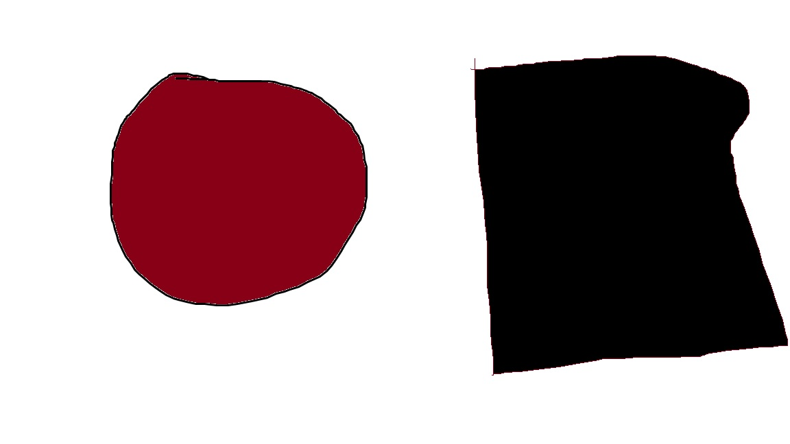

<map name="przykladowamapa">
  <area shape="circle" coords="350,250,120" href="kolo.png" alt="Koło">
  <area shape="rect" coords="690,100,1150,500" href="kwadrat.png" alt="Kwadrat">
</map>


src = Ładuje obrazek i go odpowiednio nadaje rozmiary
przykladowamapa to funkcja mapująca z współrzędnych na np. nowy obrazek
